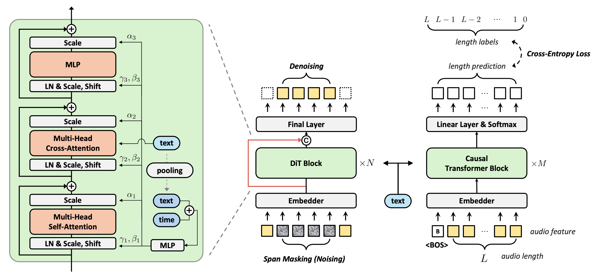
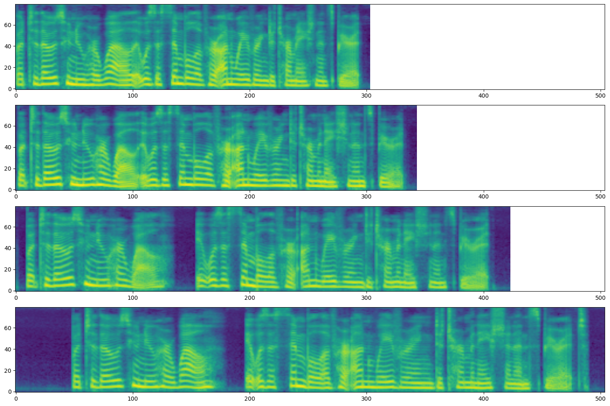

Abstract. Large-scale diffusion models have shown outstanding generative abilities across multiple modalities including images, videos, and audio. However, text-to-speech (TTS) systems typically involve domain-specific modeling factors (e.g., phonemes and phoneme-level durations) to ensure precise temporal alignments between text and speech, which hinders the efficiency and scalability of diffusion models for TTS. In this work, we present an efficient and scalable Diffusion Transformer (DiT) that utilizes off-the-shelf pre-trained text and speech encoders. Our approach addresses the challenge of text-speech alignment via cross-attention mechanisms with the prediction of the total length of speech representations. To achieve this, we enhance the DiT architecture to suit TTS and improve the alignment by incorporating semantic guidance into the latent space of speech. We scale the training dataset and the model size to 82K hours and 790M parameters, respectively. Our extensive experiments demonstrate that the large-scale diffusion model for TTS without domain-specific modeling not only simplifies the training pipeline but also yields superior or comparable zero-shot performance to state-of-the-art TTS models in terms of naturalness, intelligibility, and speaker similarity. Our speech samples are available at https://ditto-tts.github.io.
Model Overview

An overview of DiTTo-TTS. (middle) The LDM backbone is trained to denoise a span-masked noisy segment given its contextual counterpart, without utilizing phoneme and phoneme-level duration (see Section 3.1). (left) The inner structure of the DiT block incorporates multi-head cross-attention with global AdaLN (see Section 3.3). (right)The speech length predictor is based on causal transformer blocks (see Section 3.2). Both DiT blocks and the speech length predictor employ cross-attention to condition on text representation. Additionally, DiT blocks utilize AdaLN with the mean-pooled text embedding. '+' denotes addition, and 'c' represents concatenation. 'text' in sky blue oval represents the embedding from text encoder. The red line indicates a long skip connection between the states before and after the DiT blocks. The effectiveness of our design choices is demonstrated in our architecture search (see Section 6.1).
Zero-Shot TTS (LibriSpeech)
Through in-context learning, DiTTo-TTS produces speech using a reference audio and its corresponding text. We represent the prompt in blue, and the generated audio in green. The resulting speech closely resembles the reference in voice, background noise, and speaking style. When dividing prompts into 3-second segments, the audio boundaries may not always end in silence and could sometimes cut off words midway. For further details, please see English-only Evaluation part in Section 5.1 of our paper. When you click on "Show baselines", you can see the ground truth and baseline audio, etc. YourTTS, Vall-E, and CLaM-TTS audios are brought from YourTTS demo1, Vall-E demo2, and CLaM-TTS demo3 respectively.
Zero-Shot TTS (Multilingual LibriSpeech)
We represent the prompt in blue, and the generated audio in green. The resulting speech closely resembles the reference in voice, background noise, and speaking style. When dividing prompts into 3-second segments, the audio boundaries may not always end in silence and could sometimes cut off words midway. For further details, please see Multilingual Evaluation part in Section 5.1 of our paper. When you click on "Show baselines", you can see the ground truth and baseline audio, etc. CLaM-TTS audios are brought from CLaM-TTS demo1.
Celebrities
DiTTo-TTS is capable of replicating the voices and speech styles of well-known personalities. We represent the prompt in blue, and the generated audio in green. The resulting speech closely resembles the reference in voice, background noise, and speaking style. When you click on "Show baselines", you can see the ground truth and baseline audio, etc. Texts corresponding to the generated audio and CLaM-TTS audios are brought from CLaM-TTS demo1.
Anime Characters
DiTTo-TTS is capable of replicating the voices and speech styles of well-known anime characters. We represent the prompt in blue, and the generated audio in green. The resulting speech closely resembles the reference in voice, background noise, and speaking style. When you click on "Show baselines", you can see the ground truth and baseline audio, etc. Texts corresponding to the generated audio and Mega-TTS audios are brought from Mega-TTS demo1.
Robustness
DiTTo-TTS can generate robust speech, as demonstrated by its low WER. Additionally, our model is capable of consistently producing a 'whispering' effect (please listen to the first sample). Baseline samples are taken from Mega-TTS demo1 and CLaM-TTS demo2.
| Text | Mega-TTS | CLaM-TTS | DiTTo-TTS |
|---|---|---|---|
| Thursday, via a joint press release and Microsoft speech Blog, we will announce Microsoft’s continued partnership with Shell leveraging cloud, speech, and collaboration technology to drive industry innovation and transformation. | |||
| The great Greek grape growers grow great Greek grapes one one one. |
Comparision Results on RAVDESS Benchmark
The RAVDESS dataset includes two specific textual prompts: “Dogs are sitting by the door” used for the prompt text, and “Kids are talking by the door” utilized for the synthesis text. Baseline samples are taken from the NaturalSpeech 3 demo3. For more details, refer to Section 5.1 of our paper.
| Prompt Emotion | Prompt | Ground Truth | DiTTo-TTS | NaturalSpeech 3 | NaturalSpeech 2 | Voicebox (R) | VALL-E (R) | Mega-TTS 2 | StyleTTS 2 | HierSpeech++ |
|---|---|---|---|---|---|---|---|---|---|---|
| neutral | ||||||||||
| happy | ||||||||||
| calm | ||||||||||
| sad | ||||||||||
| angry | ||||||||||
| fearful | ||||||||||
| disgust | ||||||||||
| surprised |
Zero-Shot TTS Samples (Emotion)
The text “Why fades the lotus of the water” is extracted from the LibriSpeech dataset. Baseline samples are taken from the NaturalSpeech 3 demo3
| Prompt Emotion | Prompt | DiTTo-TTS | NaturalSpeech 3 |
|---|---|---|---|
| neutral | |||
| happy | |||
| calm | |||
| sad | |||
| angry | |||
| fearful | |||
| disgust | |||
| surprised |
2https://clam-tts.github.io/
3https://speechresearch.github.io/naturalspeech3/
Speech Diversity
DiTTo-TTS can synthesize speech with diverse prosody and timbre, and even environmental background sounds, from various speakers when generated without a prompt. First three text scripts are from Gigaspeech test set, and the last four are brought from Vall-E demo1.
| Text | Sample #1 | Sample #2 | Sample #3 | Sample #4 | Sample #5 |
|---|---|---|---|---|---|
| so it’s really for us. it’s kind of like the ah political, social headquarters or center for our community. | |||||
| provided it’s evidence evidence-based and rigorous but, also, i believe, fair. | |||||
| now you you've been with the office in Northern Ireland for ten years. | |||||
| Number ten, fresh nelly is waiting on you, good night husband. | |||||
| Because we do not need it. | |||||
| I must do something about it. | |||||
| He has not been named. |
Speech Rate Controllability
DiTTo-TTS can synthesize the same text into audio of varying lengths. This variable-length modeling allows for speech rate control by adjusting the total duration of the generated speech, as shown in the following mel-spectrogram. The speech rate decreases from top to bottom. For more details, refer to Section 6.1 of our paper.

| Text | Length of Latent Audio | Sample |
|---|---|---|
| But to those who knew her well, it was a symbol of her unwavering determination and spirit. |
38 | |
| 43 | ||
| 53 | ||
| 63 |
Speech Editing
DiTTo-TTS is capable of correcting mispronounced words by editing generated speech contents, without the need for the speaker to re-record the audio. The examples are brought from Voicebox demo1 and VoiceCraft demo2.
| Original Text | Original Audio | Edited Text | Voicebox (16 kHz) |
VoiceCraft (16 kHz) |
DiTTo-TTS (22.05 kHz) |
|---|---|---|---|---|---|
| in zero weather in mid-winter when the earth is frozen to a great depth below the surface when in driving over the unpaved country roads they give forth a hard metallic road | in zero weather in mid-winter when jack frost has cast his icy spell upon the land when in driving over the unpaved country roads they give forth a hard metallic road | ||||
| and especially as i am not very much up in latin myself he said the suit was on an insurance policy that he was defending on the ground of misinterpretations | and especially as i am not very much up in latin myself he said the suit was on a classified treasure map that he was defending on the ground of misinterpretations | ||||
| yet these petty operations incessantly continued in time surmount the greatest difficulties mountains are elevated and oceans bounded by the slender force of human beings | yet these petty operations incessantly continued in time surmount the greatest difficulties vast challenges emerge and unexplored frontiers beckon by the slender force of human beings | ||||
| will find himself completely at a loss on occasions of common and constant recurrence speculative ability is one thing and practical ability is another | will find himself completely at a loss on rare and unpredictable circumstances speculative ability is one thing and practical ability is another | ||||
| and the carlsruhe professor had to devise an ingenious apparatus which enabled him to bring the preparation at the required temperature on to the very plate of the microscope | and the inventive professor had to devise an ingenious apparatus which enabled him to bring the preparation at the required temperature on to the very plate of the microscope | ||||
| this was george steers the son of a british naval captain and ship modeler who had become an american naval officer and was the first man to take charge of the washington navy yard | this was george steers the son of a british naval captain and ship modeler who had become an american naval officer and was entrusted with the prestigious role of overseeing the operations at the renowned naval headquarters |
2https://jasonppy.github.io/VoiceCraft_web/
Comparison with Zero-Shot Samples and Demo Cases
We provide some comparison samples to compare DiTTo-TTS with four baseline models. To generate samples from Simple-TTS, we use the official checkpoints and the text scripts from LibriSpeech test-clean subset. For the other three, E3-TTS, NaturalSpeech 3, and Voicebox, we download the audio samples from the demo pages of each baseline and then compare them with the audio generated by our model without any resampling. Demos for each model can be found at their respective links: E3-TTS, NaturalSpeech 3, and Voicebox. Please refer to Section 5.1 and Appendix 8.2 of our paper for more details about subjective evaluation. The details of each baseline can be found in Appendix 8.3 of our paper.
| Text | Prompt | Simple-TTS (24 kHz) | DiTTo-TTS (22.05 kHz) |
|---|---|---|---|
| do not therefore think that the gothic school is an easy one | |||
| did ever anybody see the like screamed missus poyser running towards the table when her eye had fallen on the blue stream | |||
| it is sold everywhere but for the last three weeks nobody will use any snuff but that sold at the civet cat | |||
| and this was why kenneth and beth discovered him conversing with the young woman in the buggy |
| Text | Prompt | E3-TTS (24 kHz) | DiTTo-TTS (22.05 kHz) |
|---|---|---|---|
| She felt the force of the objections. | |||
| She can't get it out of her head, even after fifty years. | |||
| "I don't think so," replied Tom. | |||
| But at that moment the voice of the stranger was heard from the window. |
| Text | Prompt | NaturalSpeech 3 (16 kHz) | DiTTo-TTS (22.05 kHz) |
|---|---|---|---|
| They think you're proud because you've been away to school or something. | |||
| There were only four stationers of any consequences in the town, and at each Holmes produced his pencil chips, and bid high for a duplicate. | |||
| For, like as not, they must have thought him a prince when they saw his fine cap. | |||
| The strong position held by the Edison system under the strenuous competition that was already springing up was enormously improved by the introduction of the three wire system and it gave an immediate impetus to incandescent lighting. |
| Text | Prompt | Voicebox (16 kHz) | DiTTo-TTS (22.05 kHz) |
|---|---|---|---|
| He was in deep converse with the clerk and entered the hall holding him by the arm | |||
| Number ten fresh nelly is waiting on you good night husband | |||
| Yea his honourable worship is within but he hath a godly minister or two with him and likewise a leech | |||
| Thus did this humane and right minded father comfort his unhappy daughter and her mother embracing her again did all she could to soothe her feelings |
Comparison with LibriSpeech Zero-Shot Demo Cases
Here are some comparison samples to evaluate DiTTo-TTS against four other baseline models: Mega-TTS, NaturalSpeech 2, VALL-E, and CLaM-TTS. Our samples are downsampled to 16kHz for this section. Demos for each model can be found at their respective links: Mega-TTS, NaturalSpeech 2, VALL-E, and CLaM-TTS. The details of each baseline can be found in Appendix 8.3 of our paper.
| Text | Prompt | Ground Truth | Mega-TTS | NaturalSpeech 2 | VALL-E | CLaM-TTS | DiTTo-TTS |
|---|---|---|---|---|---|---|---|
| They moved thereafter cautiously about the hut groping before and about them to find something to show that Warrenton had fulfilled his mission. | — | — | |||||
| And lay me down in thy cold bed and leave my shining lot. | — | ||||||
| Number ten, fresh nelly is waiting on you, good night husband. | — | — | |||||
| Yea, his honourable worship is within, but he hath a godly minister or two with him, and likewise a leech. | |||||||
| Instead of shoes, the old man wore boots with turnover tops, and his blue coat had wide cuffs of gold braid. | — | ||||||
| The army found the people in poverty and left them in comparative wealth. | |||||||
| Thus did this humane and right minded father comfort his unhappy daughter, and her mother embracing her again, did all she could to soothe her feelings. | — | ||||||
| He was in deep converse with the clerk and entered the hall holding him by the arm. | — | ||||||
| Indeed, there were only one or two strangers who could be admitted among the sisters without producing the same result. | — | — | |||||
| For if he's anywhere on the farm, we can send for him in a minute. | — | — | |||||
| Their piety would be like their names, like their faces, like their clothes, and it was idle for him to tell himself that their humble and contrite hearts it might be paid a far-richer tribute of devotion than his had ever been. A gift tenfold more acceptable than his elaborate adoration. | — | — | |||||
| The air and the earth are curiously mated and intermingled as if the one were the breath of the other. | — | — | |||||
| I had always known him to be restless in his manner, but on this particular occasion he was in such a state of uncontrollable agitation that it was clear something very unusual had occurred. | — | — | |||||
| His death in this conjuncture was a public misfortune. | — | — | |||||
| It is this that is of interest to theory of knowledge. | — | — | |||||
| For a few miles, she followed the line hitherto presumably occupied by the coast of Algeria, but no land appeared to the south. | — | — |